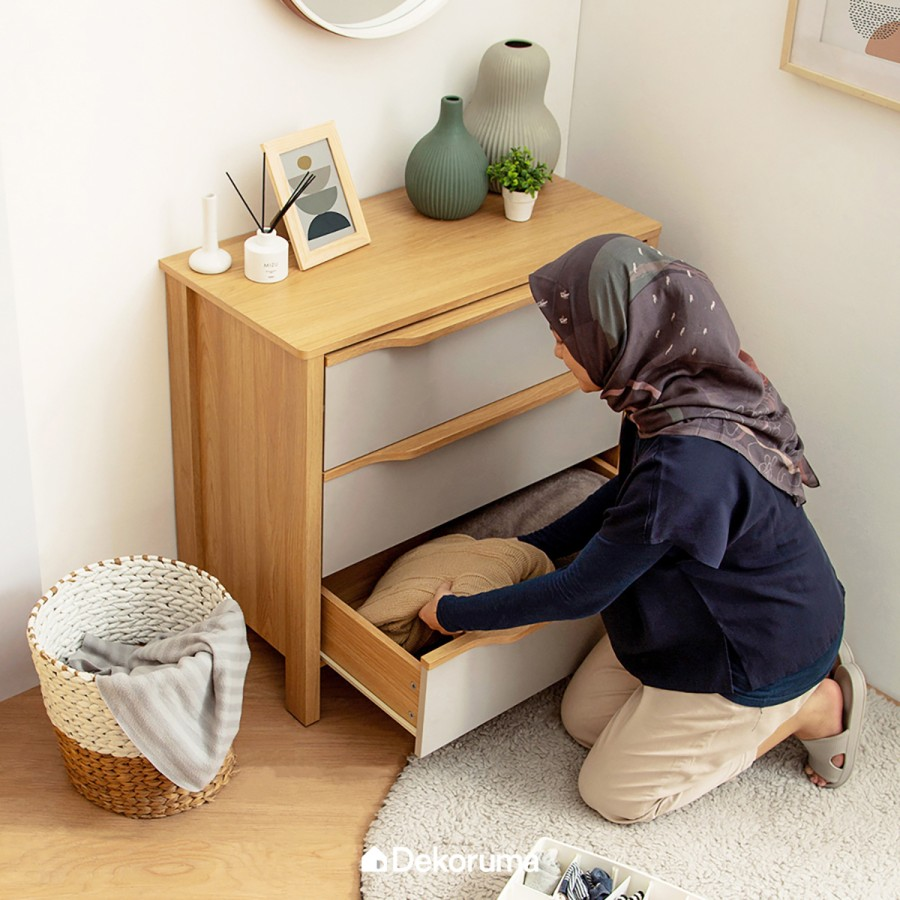
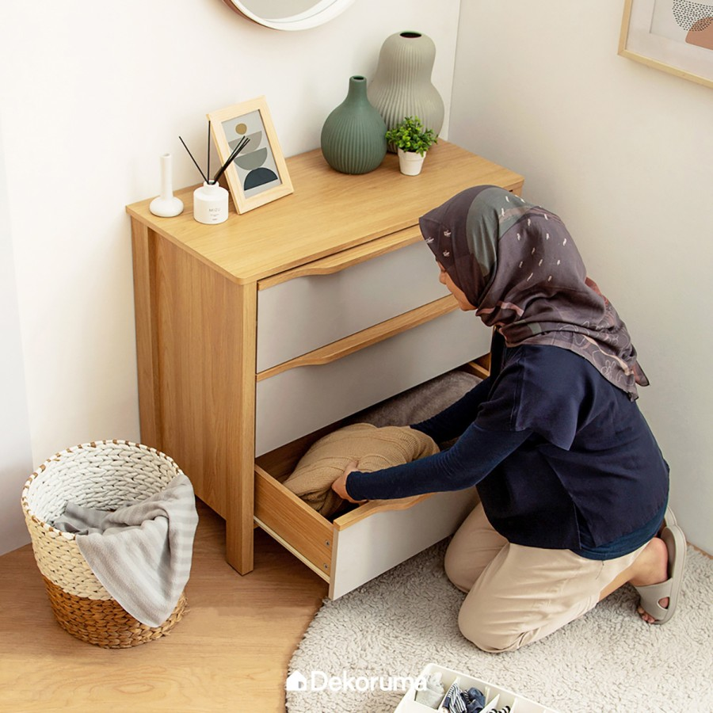
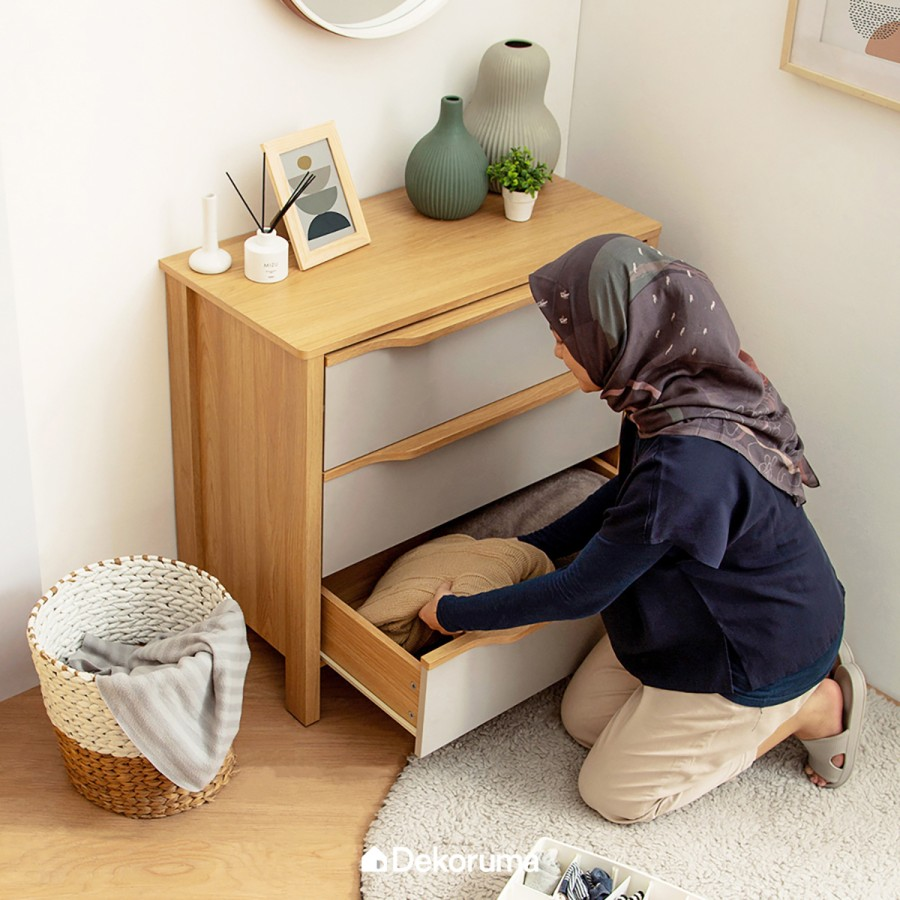
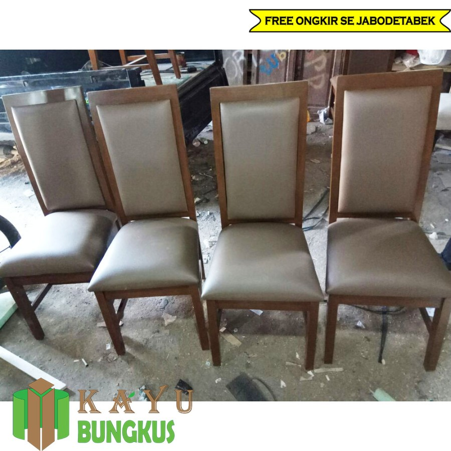
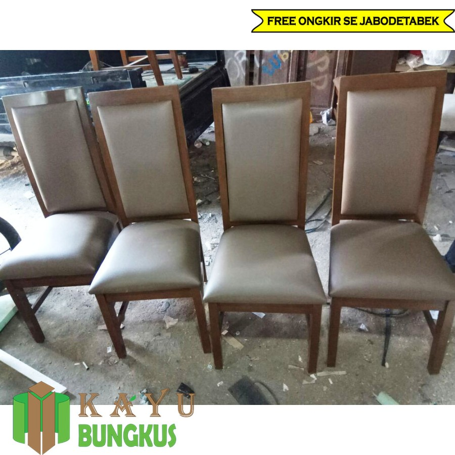

BEVERLY HILLS POLO CLUB Shirt Men BVM24088 - Navy, S
Rp. 98.000
Rp. 148.000
Terinspirasi dari era kejayaan Beverly Hills, setiap potongan dalam koleksi ini membawa nuansa kemewahan yang abadi. Didesain dengan detail yang elegan, koleksi ini menghadirkan keseimbangan sempurna antara tradisi dan modernitas
Height (H) – Width (W)
Catatan: Diukur secara manual dengan toleransi ukuran sebesar ± 2 cm
Article Details:
Shirt
Short
Sleeve
Regular Fit
Logo Stitching
Machine Wash
Sebagai Pengingat:
Kami hanya mengirimkan produk dengan ukuran dan jumlah sesuai pesanan pelanggan. Demi menjaga eksklusivitas dan kualitas, setiap pembelian bersifat final—tidak dapat dikembalikan, ditukar, atau direfund
Kami menghargai perhatian terhadap detail sebelum melakukan pembelian. Jika terdapat kendala, harap sertakan video unboxing saat pertama kali menerima produk agar kami dapat meninjau permintaan Anda dengan baik.
Terima kasih atas kepercayaan Anda dalam memilih koleksi kami.+
BEVERLY HILLS POLO CLUB Shirt Men BVM24088 - Red, SRp. 111.000
Rp. 210.000
Terinspirasi dari era kejayaan Beverly Hills, setiap potongan dalam koleksi ini membawa nuansa kemewahan yang abadi. Didesain dengan detail yang elegan, koleksi ini menghadirkan keseimbangan sempurna antara tradisi dan modernitas.Height (H) – Width (W)Catatan: Diukur secara manual dengan toleransi ukuran sebesar ± 2 cmArticle Details:
Shirt
Short
Sleeve
Regular Fit
Logo Stitching
Machine Wash
Sebagai Pengingat:Kami hanya mengirimkan produk dengan ukuran dan jumlah sesuai pesanan pelanggan. Demi menjaga eksklusivitas dan kualitas, setiap pembelian bersifat final—tidak dapat dikembalikan, ditukar, atau direfund.Kami menghargai perhatian terhadap detail sebelum melakukan pembelian. Jika terdapat kendala, harap sertakan video unboxing saat pertama kali menerima produk agar kami dapat meninjau permintaan Anda dengan baik.Terima kasih atas kepercayaan Anda dalam memilih koleksi kami.
Produk Elektronik
Toshiba LED TV - HD Smart TV 32" - 32E31KPRp. 4.500.000
Rp. 5.500.000
Hadir dengan sistem operasi VIDAA U4.2, 32-E31KP menghadirkan teknologi yang nyaman, mudah, cepat, aman, dan terjangkau. Nikmati pula pengalaman menonton super menyenangkan dengan REGZA Engine HG dan Digital Noise Reduction.
Picture Technology:
REGZA Engine HG
Display Technology
HD Ready
Essential PQ Technology
Digital Noise Reduction
Color Re-master
Picture Optimizer
Contrast Booster
Football Mode
Panel Type: VA - Soft Panel
Refresh Rate: 60Hz
Sound Technology:
REGZA Power Audio
Dolby Audio
DTS HD
Main Speakers: 8 watt x 2
Note:
Rekam video unboxing saat barang telah sampai dan centang bagian asuransi untuk klaim asuransi saat mengalami kerusakan
POLYTRON Kulkas 1 Pintu Beauty metal door 150 liter PRB 159 - Biru
Rp. 2.235.000
Rp. 3.333.333
Deskripsi:
Kulkas 1 pintu dengan desain metal door elegan di pintunya dengan sedikit aksen printing bunga. Kapasitas 150 liter. Dilengkapi freezer jumbo dan rak tempered glass yang dapat diatur.
Fitur:
Kulkas 1 Pintu
Kapasitas 150 Liter
Metal Door
Jumbo Freezer
Tempered Glass Rack
Perfect Door Sealed
Direct Cooling
Produk Furniture
Dekoruma MITSU Lemari Laci Minimalis 3 Pintu | Kabinet Kayu
Rp. 1.000.000
Rp. 4.000.000

Nikmati GRATIS ONGKIR JABODETABEK. Lemari kayu 3 pintu minimalis, cocok untuk berbagai ruangan.


 

 
